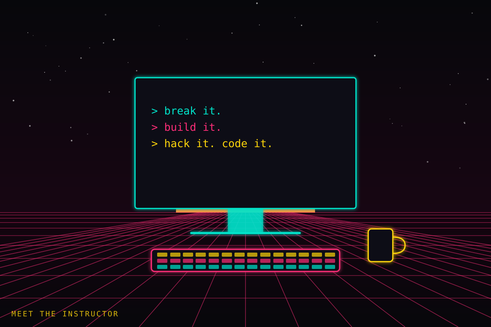

Three steps in.
Pick a Level 1 course
Computer Science Foundations, Coding 1: Through Game Design, Computer Maintenance, or Future Technologies: AI.
Compare entry courses →Add it at registration
Choose it during Chatfield course registration and talk with your counselor.
Course registration ↗Keep going
Follow a pathway, prepare for certifications, and look for courses that earn ACC college credit.
Credit & credential map →
Good to know.
Where should a new student start?
Level 1 courses are the entry courses: Computer Science Foundations, Coding 1: Through Game Design, Computer Maintenance, and Future Technologies: AI.
How does college credit work?
ACC: these courses are approved for concurrent enrollment credit with Arapahoe Community College. Students enroll with ACC separately to earn it. AP: colleges determine credit or placement.
Are certification exams included?
Certification prep is separate from the exam. Confirm access, fees, and vouchers.
Are there prerequisites?
AP Computer Science Principles requires Algebra 1. Data Science, a Math Department course, requires Algebra II or Algebra II Honors with a C or better. Computer Systems builds skills for both AP courses but is not a prerequisite.
Is there a cyber club?
Yes. The Chatty Hackers, Chatfield’s CyberPatriot club, meet Thursdays after school in room C200. Meet the club →
What can juniors and seniors do beyond the courses?
Independent study for grades 11–12: CTE Certification (build a cloud lab, prototype a VR experience, or go deeper in Python, Linux, and cybersecurity) or CTE Work-Based Learning in an approved IT placement, where 60 internship hours can count for 0.5 high school elective credit.
Bring your field into our lab.
We work with people in IT, cybersecurity and AI who want to help the next group of professionals.
- Guest speakers and lab mentors
- Work-Based Learning placements for juniors and seniors
- AI Symposium guests and judges
Get in touch: jj.moss@jeffco.k12.co.us

[Instructor name]
Teaches across all three pathways, runs Chatty Hackville and coaches CyberPatriot. Built the program from the ground up, with a background in web development and technology consulting.
Email: jj.moss@jeffco.k12.co.us · Room: [room]